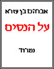

ראשי
>
מדע וטבע
>
נסים
>
ראשי
>
סופרים בני דורנו
>
ד"ר אברהם בן עזרא
>
על הנסים
קוד: על הנסים בתנ"ך
סוג: אוסף
מאת: ד"ר אברהם בן עזרא
אל: ספר
"לא שאלתי את ד"ר אברהם בן עזרא אם הוא מאמין בנסים. נדמה לי כי התשובה לכך נמצאת בספר זה, שמדבר על מה שמרתק אותנו יותר מכל דבר אחר, מדבר על הנסים" [מתוך הפתיחה]

קנו את הספר
/ אתר המחבר
(קישור חיצוני)
הרשאה לנס [פתיחה]
/ יותם ראובני
כל הספר בקובץ אחד (.doc)
/ ד"ר אברהם בן עזרא -> ספר